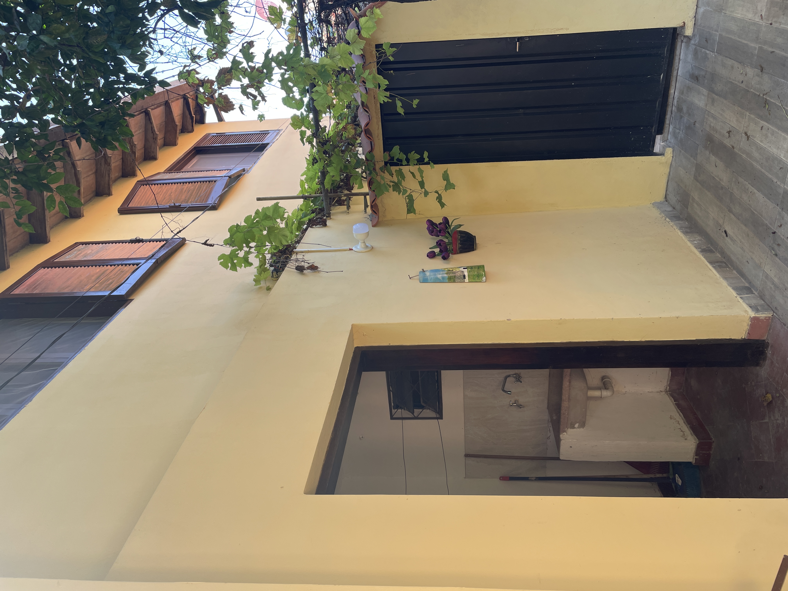
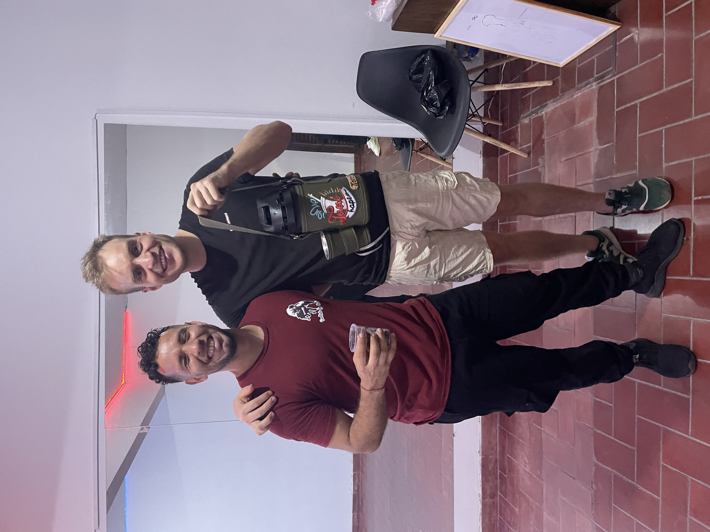

20 De
energiebalans
Ongekende vriendelijkheid,
inburgeringsuitdagingen en
kerst in Nederland.

Op 12 oktober 1492 ontdekte Christoffel Columbus Amerika. Hij kwam aan op de Bahama's, wat aan de oostkant van Amerika ligt. Tijdens zijn eerste bezoek liet hij 41 bemanningsleden achter op de Dominicaanse Republiek om hier een Spaanse nederzetting op te zetten, goud te vinden en de mensen te bekeren tot het Christendom. Columbus nam zelf ook een aantal inheemse mensen mee terug uit de nieuwe wereld, en toonde ze aan de inwoners van Barcelona. Hij vertelde de mensen over het continent waarvan hij dacht dat het Azië was. In die tijd wist men al dat de aarde rond was, maar dacht men ook dat de aarde veel kleiner was, waardoor ze niet verwacht hadden dat er via deze nieuwe westelijke route nog een continent tussen zou kunnen zitten. Toen Columbus voor zijn tweede reis terugkeerde naar Midden-Amerika, bleken alle achtergebleven bemanningsleden door inheemse volkeren te zijn vermoord. Er ontstonden bloederige jaren, want de lokale bevolking was lang niet altijd gediend van de vaak agressieve houding van de Europeanen. Langzaam maar zeker werden steeds meer stukken van Centraal- en Zuid-Amerika ingelijfd en opnieuw stuitten de kolonisten op veel verzet. Het was dan ook een verrassing toen de Spaanse ontdekkingsreiziger Juan de Salazar de Espinosa in 1537 Paraguay ontdekte en hij tot zijn grote verbazing relatief weinig conflict ontving met de lokale Guarani stammen die een veel zachtere en vriendelijkere houding aannamen. Er werden zelfs mestiezen geboren, nakomelingen met een mengeling van beide culturen.
Nog altijd identificeren bewoners van Paraguay zich nog met deze oorspronkelijke stam, de 'Guarani'. Ik denk te begrijpen wat die ontdekkingsreiziger eeuwen geleden heeft bedoeld met ‘die zachte en vriendelijkere houding’. Tijdens mijn eerste weken in Paraguay word ik overal geholpen, en mensen maken zich geen seconde druk of ze daardoor misschien wel te laat komen. Waar ter wereld zie je dat nog, dat mensen zo in het moment leven? In de 11 maanden dat ik in Paraguay heb mogen zijn, kan ik mij niet herinneren dat ik ook maar iemand chagrijnig heb zien kijken. Een Bolt taxichauffeur vertelde me, ‘we kennen hier geen racisme zoals je dat in Amerika ziet’. De normen en waarden van ‘samen met de familie’ stammen al uit het pre-koloniale tijdperk waarbij stammen samenkwamen om de traditionele “thereree” te drinken. Wat me ook opvalt is dat mensen van alle leeftijden vaak samen met elkaar optrekken, wellicht omdat ze hier vaak op veel jongere leeftijd al kinderen krijgen. Een kloof tussen de generaties lijkt niet te bestaan. Paraguay, soms nog wel eens verward met Uruguay, is niet het land met de meeste toeristische bezienswaardigheden, maar de mensen zijn altijd positief gestemd en waarderen het kleins dat ze hebben. Bewonderenswaardig, want wanneer ik wandel door de hoofdstad van Asuncion, zie ik ook veel mensen die op straat leven onder erbarmelijke hygiënische omstandigheden. Stoeptegels liggen vaker los dan vast en gaten in de wegen zijn de vrees van iedere automobilist.
 Kletsen is wat de mensen hier het liefste doen, over de hitte, het eten of over voetbal. De drang om het gesprek gaande te houden zit zo in het DNA, dat ik soms al een 2e of 3e vraag op me krijg afgevuurd nog voor ik de eerste heb weten te beantwoorden. Dit maakt het voor mij soms lastig om me in publieke ruimtes te begeven. Niet altijd zit ik erop te wachten om praatjes te maken. Soms verlang ik naar een Europees praatje waarbij soms ook even een stilte valt. “Hey muchacho, waar kom je vandaan?”, roept een man dwars door een restaurant terwijl ik net een hap biefstuk naar binnen werk. “Mag ik jou als cadeau geven” roept zijn vrouw er als grap achteraan. Soms zit ik goed in mijn hum, en vind ik het geen probleem. En soms vind ik het nogal genant. In de sportschool weet ik niet goed hoe ik me moet gedragen wanneer ik om me heen kijk en zie dat ik de enige ben die niet aan het kletsen is. Het voelt bijna gek om te sporten in een sportschool. Moet ik dan toch ook maar een praatje maken? Je wil je graag aanpassen aan de Paraguayaanse cultuur, maar natuurlijk ook jezelf blijven. En een gemaakt praatje aanknopen, daar trappen de mensen natuurlijk ook niet in.
Kletsen is wat de mensen hier het liefste doen, over de hitte, het eten of over voetbal. De drang om het gesprek gaande te houden zit zo in het DNA, dat ik soms al een 2e of 3e vraag op me krijg afgevuurd nog voor ik de eerste heb weten te beantwoorden. Dit maakt het voor mij soms lastig om me in publieke ruimtes te begeven. Niet altijd zit ik erop te wachten om praatjes te maken. Soms verlang ik naar een Europees praatje waarbij soms ook even een stilte valt. “Hey muchacho, waar kom je vandaan?”, roept een man dwars door een restaurant terwijl ik net een hap biefstuk naar binnen werk. “Mag ik jou als cadeau geven” roept zijn vrouw er als grap achteraan. Soms zit ik goed in mijn hum, en vind ik het geen probleem. En soms vind ik het nogal genant. In de sportschool weet ik niet goed hoe ik me moet gedragen wanneer ik om me heen kijk en zie dat ik de enige ben die niet aan het kletsen is. Het voelt bijna gek om te sporten in een sportschool. Moet ik dan toch ook maar een praatje maken? Je wil je graag aanpassen aan de Paraguayaanse cultuur, maar natuurlijk ook jezelf blijven. En een gemaakt praatje aanknopen, daar trappen de mensen natuurlijk ook niet in.
 Wanneer ik de sleutel steek in de deur van mijn appartement aan de Antequerra straat dan lijken voorbijgangers hun ogen niet te kunnen geloven “Woont hij echt hier?”. Leven in het ‘centrum’ van Asuncion klinkt gezellig, maar mensen zijn massaal uit het centrum weggetrokken waardoor het erg in verval is geraakt. Zodra ik de deur uit ga, voel ik me nooit echt helemaal op mijn gemak en het is lastig uit te leggen hoe dat komt. Dagelijks maak ik wel iets bizars mee op straat. Zo zag ik twee keer een dode kat op straat liggen. Een boom viel op een vrouw. En iedere straat kent een autopoetser. Iemand die je maar beter te vriend kan proberen te houden. Mensen proberen op allerlei manieren verwarring te scheppen door bijvoorbeeld opeens te schreeuwen of te toeteren. De eerste maand schrok ik me wezenloos. Zodra ik mijn voordeur uitloop staat er al vaak meteen een groepje mensen tegen de gevel aan te hangen. Die doen in principe niets verkeerd, maar je voelt je er niet echt fijn bij. Zodra de nacht valt lijkt de wijk te veranderen in een vrijstaat, waar mensen onder invloed van verdovende middelen tevoorschijn komen, net zoals in de serie ‘The walking dead’. Automobilisten die 's nachts nog met de auto de straat op moeten, hebben daarom vaak geblindeerde ramen en rijden bewust door rood omdat stoppen op het kruispunt levensgevaarlijk kan zijn. Mijn taxi heeft een honkbalknuppel naast hem paraat. Soms hoor je een dag lang de slijptol van de buurman of een oorverdovend lawaai van trommels uit de gymzaal. Ik vind het eigenlijk helemaal niet vreemd dat ik nauwelijks toeristen zie. Het is een wijk waar ik allesbehalve rustig kan wonen, maar gelukkig hoef ik nooit echt lang op straat te zijn, want de plekken waar ik kom bezoek ik overdag en liggen op steenworp afstand.
Wanneer ik de sleutel steek in de deur van mijn appartement aan de Antequerra straat dan lijken voorbijgangers hun ogen niet te kunnen geloven “Woont hij echt hier?”. Leven in het ‘centrum’ van Asuncion klinkt gezellig, maar mensen zijn massaal uit het centrum weggetrokken waardoor het erg in verval is geraakt. Zodra ik de deur uit ga, voel ik me nooit echt helemaal op mijn gemak en het is lastig uit te leggen hoe dat komt. Dagelijks maak ik wel iets bizars mee op straat. Zo zag ik twee keer een dode kat op straat liggen. Een boom viel op een vrouw. En iedere straat kent een autopoetser. Iemand die je maar beter te vriend kan proberen te houden. Mensen proberen op allerlei manieren verwarring te scheppen door bijvoorbeeld opeens te schreeuwen of te toeteren. De eerste maand schrok ik me wezenloos. Zodra ik mijn voordeur uitloop staat er al vaak meteen een groepje mensen tegen de gevel aan te hangen. Die doen in principe niets verkeerd, maar je voelt je er niet echt fijn bij. Zodra de nacht valt lijkt de wijk te veranderen in een vrijstaat, waar mensen onder invloed van verdovende middelen tevoorschijn komen, net zoals in de serie ‘The walking dead’. Automobilisten die 's nachts nog met de auto de straat op moeten, hebben daarom vaak geblindeerde ramen en rijden bewust door rood omdat stoppen op het kruispunt levensgevaarlijk kan zijn. Mijn taxi heeft een honkbalknuppel naast hem paraat. Soms hoor je een dag lang de slijptol van de buurman of een oorverdovend lawaai van trommels uit de gymzaal. Ik vind het eigenlijk helemaal niet vreemd dat ik nauwelijks toeristen zie. Het is een wijk waar ik allesbehalve rustig kan wonen, maar gelukkig hoef ik nooit echt lang op straat te zijn, want de plekken waar ik kom bezoek ik overdag en liggen op steenworp afstand.
 Komen auto’s me tegemoet, dan voel ik de vele ogen op mij gericht, waardoor ik me net een kijkpop voel. Dus met de tijd leer ik de wat rustigere weggetjes die het minste energie kosten om van a naar b te gaan. Even vlug oversteken wanneer er een zwerver ligt, dan val ik niet zo op. Een soort van undercoveragent die op een stiekeme missie is. Het werkt, al is het natuurlijk een knotsgekke manier van je dag doorkomen. Drukke plekken zoals hoofdstraat ‘La Palma’ of “mercado 4” kosten me zoveel energie om ze te bezoeken, dat ik steevast erna op bed moet gaan liggen om bij te komen.
Komen auto’s me tegemoet, dan voel ik de vele ogen op mij gericht, waardoor ik me net een kijkpop voel. Dus met de tijd leer ik de wat rustigere weggetjes die het minste energie kosten om van a naar b te gaan. Even vlug oversteken wanneer er een zwerver ligt, dan val ik niet zo op. Een soort van undercoveragent die op een stiekeme missie is. Het werkt, al is het natuurlijk een knotsgekke manier van je dag doorkomen. Drukke plekken zoals hoofdstraat ‘La Palma’ of “mercado 4” kosten me zoveel energie om ze te bezoeken, dat ik steevast erna op bed moet gaan liggen om bij te komen.
 Op kantoor La Cofi, zie ik dat ik tegen vergelijkbare uitdagingen aanloop. Programmeren vraagt veel focus, waardoor concentreren erg lastig is als het personeel naast je een groot deel van de dag met elkaar aan het kletsen is. Ze zetten een muziekje op en bellen met hun telefoon op de luidspreker. Het was wel weer ontzettend vriendelijk, dat ze mij toen als oplossing een aparte kantoorruimte achterin aanboden vanaf waar ik een heel stuk beter heb kunnen werken. Toch blijft het bijzonder dat ik zelfs op die plek nog regelmatig met oordoppen in heb moeten werken omdat de klusjesman toevallig net wat moest repareren, en hij weer gebeld werd, en omdat de schoonmaakster toevallig ook met veel bombarie langskwam. Tsja, rekening houden met het geluid, dat lijken de mensen hier in Paraguay niet zo belangrijk te vinden.
Op kantoor La Cofi, zie ik dat ik tegen vergelijkbare uitdagingen aanloop. Programmeren vraagt veel focus, waardoor concentreren erg lastig is als het personeel naast je een groot deel van de dag met elkaar aan het kletsen is. Ze zetten een muziekje op en bellen met hun telefoon op de luidspreker. Het was wel weer ontzettend vriendelijk, dat ze mij toen als oplossing een aparte kantoorruimte achterin aanboden vanaf waar ik een heel stuk beter heb kunnen werken. Toch blijft het bijzonder dat ik zelfs op die plek nog regelmatig met oordoppen in heb moeten werken omdat de klusjesman toevallig net wat moest repareren, en hij weer gebeld werd, en omdat de schoonmaakster toevallig ook met veel bombarie langskwam. Tsja, rekening houden met het geluid, dat lijken de mensen hier in Paraguay niet zo belangrijk te vinden.
Op de plekken waar ik al wat vaker kom, raken de mensen wat meer gewend aan mijn aanwezigheid. Neem bijvoorbeeld Salsaschool Soul waar ik merk dat het dansen een groot deel van de culturele barrière wegneemt waardoor ik ook eindelijk eens wat meer van mezelf kan laten zien. We werken toe naar een Bachata optreden in december in een groot theater waarbij ik deelneem aan vier optredens. Ook de andere plekken waar ik wekelijks kom zoals in de bibliotheek waar een hele vriendelijke man Alberto werkt, op de markt bij het eettentje van Zuny, en bij de buurvrouw Sandra merk ik dat ik wat meer op mijn gemak ben en dan ook eens kan ervaren wat voor ontzettend warme mensen er ook in Asuncion zijn.
 De mensen die ik ontmoet zijn vaak zo bevlogen dat ik soms direct word uitgenodigd om met hen mee op vakantie te gaan of om hun dorp van herkomst te bezoeken. Op mijn mobiel is het niet meer bij te houden. Ik was jarig en eindelijk, na 4 maanden, was er een mooi spontaan avondje met wat mensen van de dansschool. De dag erna ontving ik meteen berichtjes van een ander groepje: "Met hen ga je wel wat drinken, maar met ons nooit.” Ook al is het met de beste bedoelingen, soms lijkt het wel of alles wat ik doe onder een vergrootglas wordt gelegd en dat is soms best wel vermoeiend.
De mensen die ik ontmoet zijn vaak zo bevlogen dat ik soms direct word uitgenodigd om met hen mee op vakantie te gaan of om hun dorp van herkomst te bezoeken. Op mijn mobiel is het niet meer bij te houden. Ik was jarig en eindelijk, na 4 maanden, was er een mooi spontaan avondje met wat mensen van de dansschool. De dag erna ontving ik meteen berichtjes van een ander groepje: "Met hen ga je wel wat drinken, maar met ons nooit.” Ook al is het met de beste bedoelingen, soms lijkt het wel of alles wat ik doe onder een vergrootglas wordt gelegd en dat is soms best wel vermoeiend.
Achteraf gezien was ik de eerste maanden in Asuncion nog redelijk actief. Op woensdag en zaterdag bezocht ik salsa feestjes, ik ging naar buiten, naar allerlei koffietentjes en een familie nam mij in de armen om hun land aan mij te laten zien. Ik moest mijn verwachtingen natuurlijk wel wat bijstellen, want een berg hier in Paraguay is natuurlijk geen Peruaanse Machu Picchu, maar ik was hier natuurlijk ook niet gekomen voor de mooiste Instagram foto's. De reden om hier in Paraguay een poosje te settelen was omdat ik wat stabieler en rustiger wilde leven, want ik had al zo’n drukke reisperiode achter de rug. Het was dan ook behoorlijk lastig dat er iedere keer als ik ergens geweest was, gezegd werd: “Jorrit, in de tijd dat we jou zien hebben wij elkaar alweer 4 keer gezien’ of ‘Je lijkt zo eenzaam en gesloten, je zou eens wat meer moeten genieten’, want zelf ervaarde ik dat helemaal niet zo en ga je soms met een gevoel naar huis alsof jouw aanwezigheid nooit genoeg is. Wat zou het mij uitmaken of iemand die naar Nederland komt ieder weekend op pad gaat of wat rustiger leeft.
 De vermoeidheid van op straat lopen en de sociale druk stapelden zich zo erg op dat ik besloot te stoppen met de salsafeestjes, veranderde naar een rustigere markt, wat meer thuis ben gaan sporten en op straat een zonnebril ging dragen. Ik vond dat allemaal erg jammer om te moeten doen, alhoewel ik wel al heel snel merkte dat ik meer ontspannen de dagen door kwam. Ook leerde ik slimme trucjes, zoals niet ‘Holla’ tegen de taxichauffeur te zeggen maar het meer formele ‘Buenas dias Senor’. Woorden als ‘airconditioning’, of ‘Nike’ konden uit mijn mond een verkeerd signaal afgeven net als wanneer ik met een briefje groot geld betaalde. Daarom stelde ik me nooit voor als programmeur maar zei ik altijd dat ik een website onderhield. Ooit ontmoette ik in het Australische Perth een dame die altijd zei dat ze uit Canada kwam terwijl ze eigenlijk uit Amerika kwam. Het is helemaal niet gek om tijdens een reis jezelf wat anders voor te doen als dat positiever wordt ontvangen.
De vermoeidheid van op straat lopen en de sociale druk stapelden zich zo erg op dat ik besloot te stoppen met de salsafeestjes, veranderde naar een rustigere markt, wat meer thuis ben gaan sporten en op straat een zonnebril ging dragen. Ik vond dat allemaal erg jammer om te moeten doen, alhoewel ik wel al heel snel merkte dat ik meer ontspannen de dagen door kwam. Ook leerde ik slimme trucjes, zoals niet ‘Holla’ tegen de taxichauffeur te zeggen maar het meer formele ‘Buenas dias Senor’. Woorden als ‘airconditioning’, of ‘Nike’ konden uit mijn mond een verkeerd signaal afgeven net als wanneer ik met een briefje groot geld betaalde. Daarom stelde ik me nooit voor als programmeur maar zei ik altijd dat ik een website onderhield. Ooit ontmoette ik in het Australische Perth een dame die altijd zei dat ze uit Canada kwam terwijl ze eigenlijk uit Amerika kwam. Het is helemaal niet gek om tijdens een reis jezelf wat anders voor te doen als dat positiever wordt ontvangen.
 De integratie verliep misschien niet helemaal vlekkeloos, de laatste maanden was er wel meer tijd voor mijn nieuwe baan op Bittensor. Hiermee beginnen is best pittig omdat het werk vierentwintig uur per dag doorgaat en je prestaties steeds vergeleken worden met die van andere programmeurs, vaak met veel meer ervaring. De eerste maanden was het dus vooral ploeteren zonder ervoor beloond te worden. Ik herinner me een week waarop er maandag problemen waren en ik alles af heb moeten zeggen tot ik op donderdag alles gelukkig weer aan de praat kreeg. Gelukkig heb ik er veel van geleerd, zodat zo'n groot noodgeval steeds onwaarschijnlijker zal zijn. Het is leuk dat ik op Bittensor met mensen werk die net zo gemotiveerd zijn als ik.
De integratie verliep misschien niet helemaal vlekkeloos, de laatste maanden was er wel meer tijd voor mijn nieuwe baan op Bittensor. Hiermee beginnen is best pittig omdat het werk vierentwintig uur per dag doorgaat en je prestaties steeds vergeleken worden met die van andere programmeurs, vaak met veel meer ervaring. De eerste maanden was het dus vooral ploeteren zonder ervoor beloond te worden. Ik herinner me een week waarop er maandag problemen waren en ik alles af heb moeten zeggen tot ik op donderdag alles gelukkig weer aan de praat kreeg. Gelukkig heb ik er veel van geleerd, zodat zo'n groot noodgeval steeds onwaarschijnlijker zal zijn. Het is leuk dat ik op Bittensor met mensen werk die net zo gemotiveerd zijn als ik.
 In Latijns-Amerika zeggen mensen vaak het sociaal wenselijke. ‘Paraguay is mijn favoriete land!’ zeg ik dan uiteraard ook. Maar deze blog ben ik natuurlijk niet gaan schrijven om alleen maar te melden dat alles geweldig is, maar juist om te vertellen hoe ik het echt ervaren heb. En Paraguay was uiteindelijk misschien toch niet helemaal wat ik ervan verwacht had. Nu de pilaren van Bittensor staan, gaat er geleidelijk aan meer tijd komen voor een betere balans. Dus er staat jullie nog een mooi toetje te wachten. Maar eerst een poosje terug naar de vertrouwde omgeving van Bavel. Na 1,5 jaar eindelijk herenigd met familie samen aan de kersttafel. Ik heb er onwijs veel zin in. Iedereen alvast een hele mooie jaarwisseling en ik hoop dat jullie in 2025 weer een kijkje zullen nemen op de website.
In Latijns-Amerika zeggen mensen vaak het sociaal wenselijke. ‘Paraguay is mijn favoriete land!’ zeg ik dan uiteraard ook. Maar deze blog ben ik natuurlijk niet gaan schrijven om alleen maar te melden dat alles geweldig is, maar juist om te vertellen hoe ik het echt ervaren heb. En Paraguay was uiteindelijk misschien toch niet helemaal wat ik ervan verwacht had. Nu de pilaren van Bittensor staan, gaat er geleidelijk aan meer tijd komen voor een betere balans. Dus er staat jullie nog een mooi toetje te wachten. Maar eerst een poosje terug naar de vertrouwde omgeving van Bavel. Na 1,5 jaar eindelijk herenigd met familie samen aan de kersttafel. Ik heb er onwijs veel zin in. Iedereen alvast een hele mooie jaarwisseling en ik hoop dat jullie in 2025 weer een kijkje zullen nemen op de website.